While the strategic depth of Fire Emblem Heroes doesn’t quite match that of the original series, there is still a fair bit of room for thinking and strategizing. In this post, I hope to share some strategic insights and help you improve your gameplay, particularly if you are not a veteran to the turn-based strategy game genre.
Positioning
I’m a big fan of heroes with repositioning abilities, particularly ones that let you draw your heroes out of the way of harm. Consider the following situation (taken from an advanced arena battle):
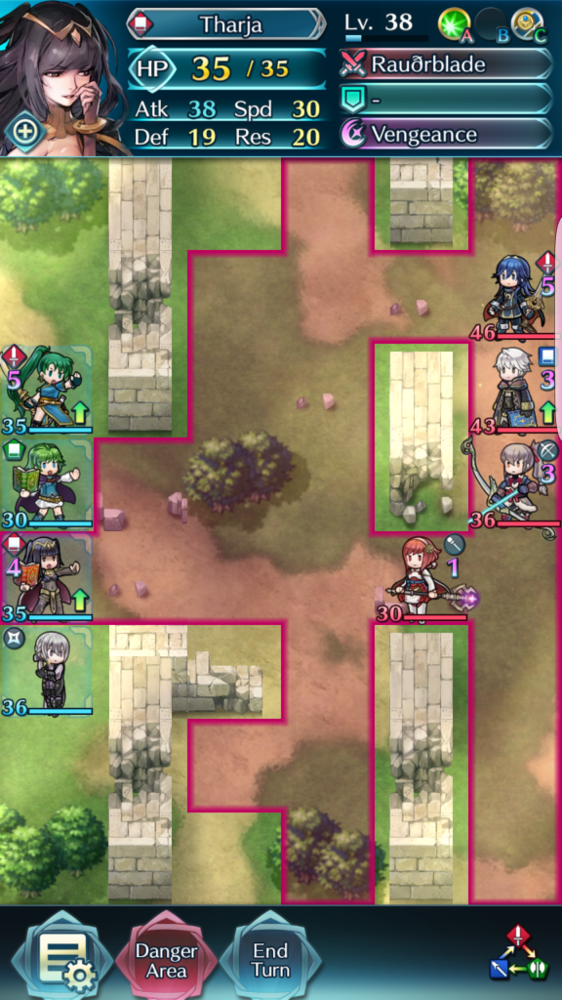
Battle position after first turn
First, I use Tharja to attack.
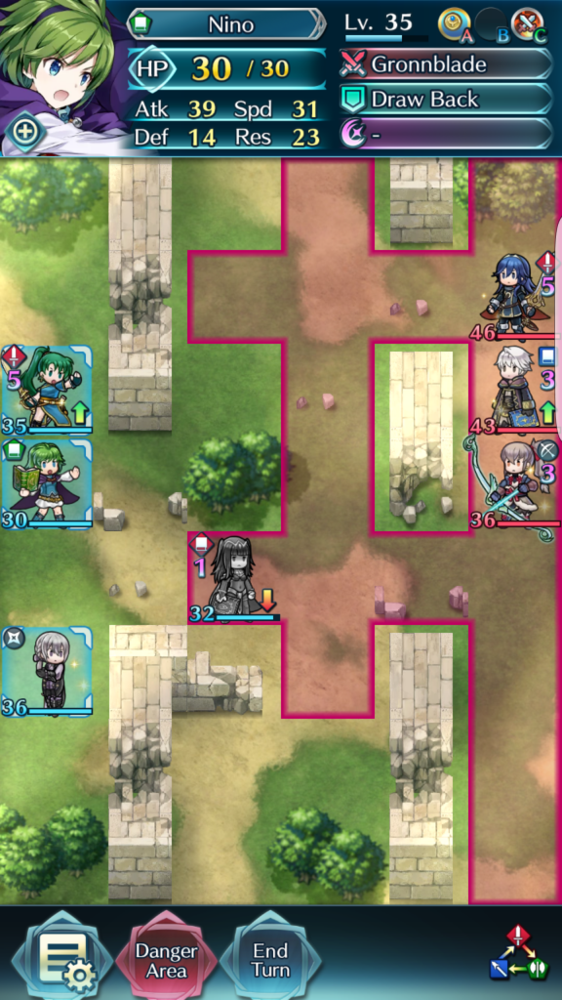
Note: I actually misplayed here. I should have used Jakob (bottom character’s) Rally Resistance ability, so Tharja would have taken 0 damage). More thinking needed!
I then use Nino’s Draw Back ability to keep Tharja out of harm’s way:
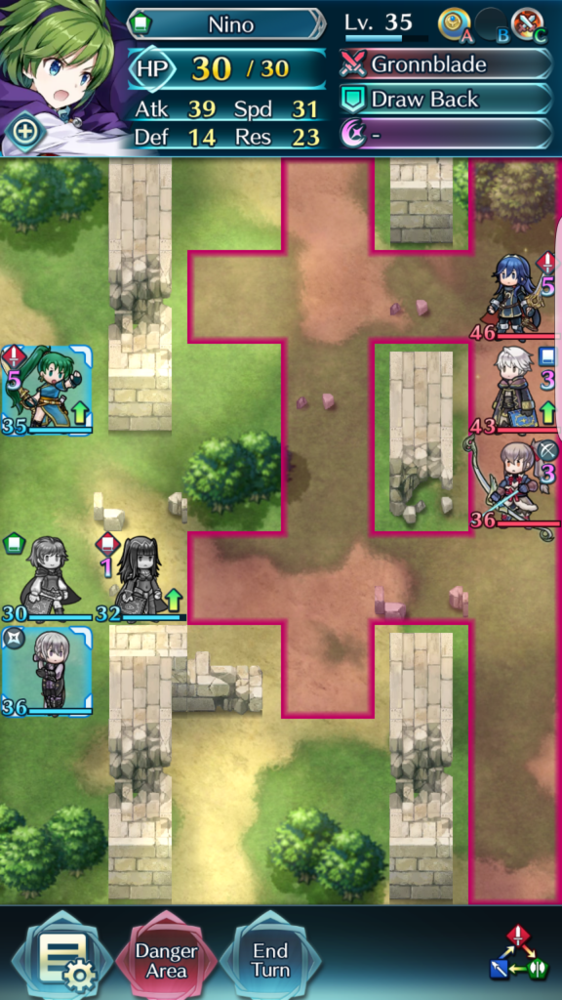
What was a 4v4 is now a 4v3! Being able to recognize plays like this can allow you to pick off (or heavily damage) one enemy at almost no harm to your own characters.
Note: Be Careful with “Danger Area”
On a related note, be careful with relying on “Danger Area”. It can mask the true attack range of enemies. In the above screenshot, the space directly above Tharja is not safe, as the wall in front of the enemy Takumi can be broken, so it would not be wise for me to move Lyn there.
Positioning abilities such as shove also pose a potential problem. In my experience, the AI is extremely stupid when using repositioning abilities (and in the movement order in breaking obstacles). Still, I prefer not to take any chances; I like to calculate the possible moves the AI could make and stay out of the range of any potential attack.
The most dangerous is when the enemy has units with Sing or Dance (Azusa or Olivia). Because these units allow other units to take an extra turn, what was a 2-movement unit suddenly becomes a 4-movement unit. In these situations, be extra careful with your positioning, and keep an extra 2 spaces away from the danger zone if needed.
Example: in the below screenshot, Tharja can actually be attacked because of Olivia’s Dance ability.

Attacking is not Always a Good Idea
This might be obvious to some, counterintuitive to others. There are many reasons why you might not want to attack an enemy unit, even if they are within attacking range. I’ll start with the simplest. Imagine that you and your opponent are each down to only one hero – the same hero with the same stats. This hero has 40 hp and can attack for 20 damage. If you attack first, after combat resolves and the enemy has counterattacked, both units will be down to 20 hp. On the next turn, the opponent attacks and defeats your unit. Whichever unit attacks first loses.
On a more more high level basis, consider the following situation:
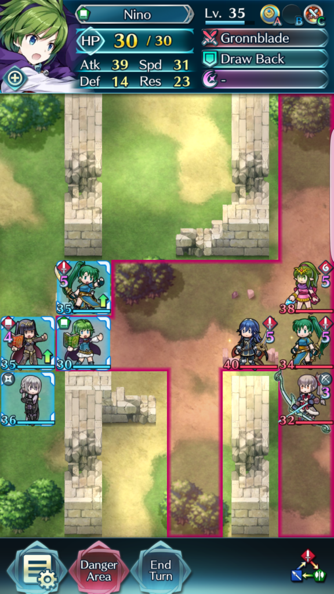
I can attack with Nino and/or Tharja, or I could even attack with Jakob by using Nino’s Draw Back ability to move him in range. However, I won’t be able to KO any enemy unit, and I would lose at least 1 unit on the next turn when the enemy attacks. Even if I could KO an enemy unit, it would end up being at best a 1 for 1 trade. Given that you generally want to keep as many units alive as possible (you’re not getting a very high arena score if you only end up winning by 1 hero each match), I’d prefer to do better than go for 1 for 1 trades.
So here’s what I did:
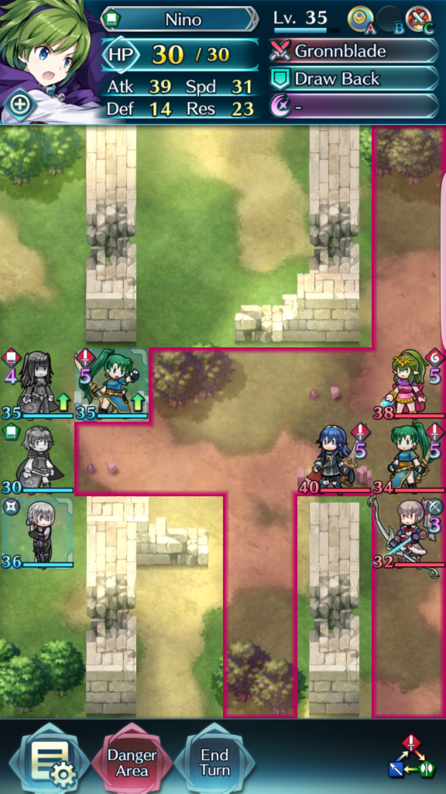
And, being stupid, the AI charges into battle:
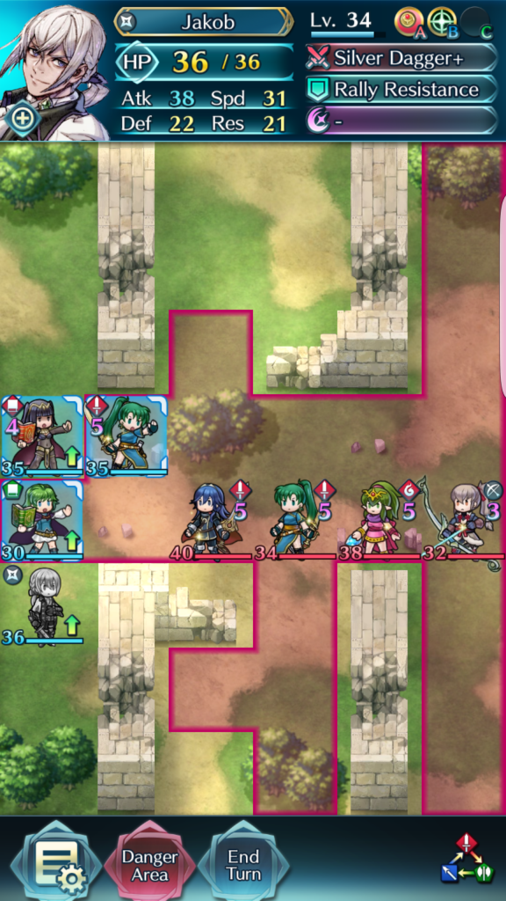
I have a much better attacking position here compared to the first opportunity where I could have attacked. At this point, I can easily KO one unit, and damage a second.
Eventually I ended up winning. I might have misplayed a bit later down the line, but still, winning with 2 units is not a bad outcome given that:
- My opponent’s team was all Lv. 40 save for 1 hero, while I had 2 level 35 and under characters.
- They were all 5-star compared to me having 2 4-stars.
- It was 1 SS-Tier and 3 S-Tier heroes, compared to my team of 1 S-Tier, 2 A-Tiers, and 1 B-Tier.
- I had a relative color disadvantage with Nino.
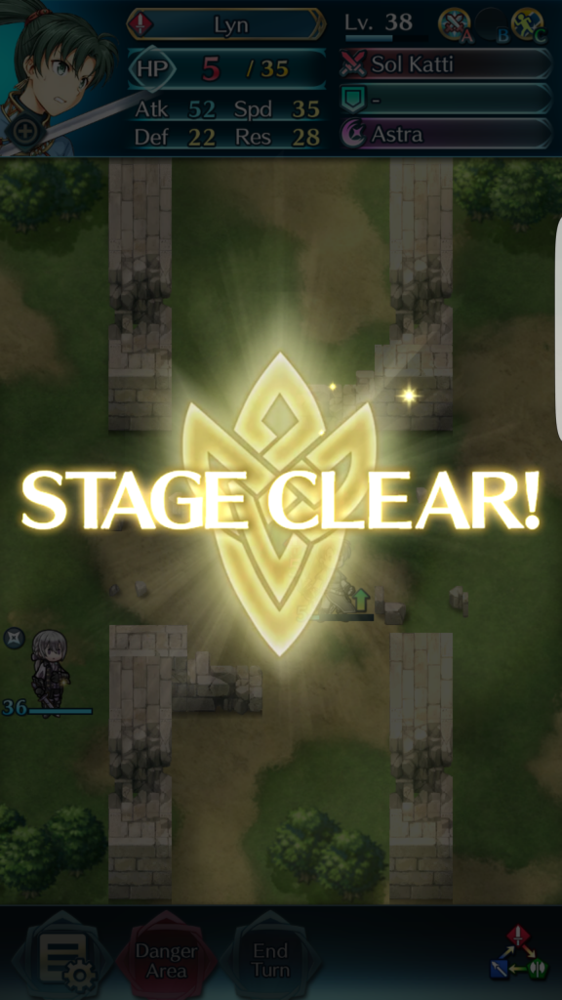
Part of the reason I wanted to highlight this battle in particular is that, with good tactics and taking advantage of the relatively dumb AI, you can win even when faced with a stats disadvantage.
Watch for Synergy Between Characters
This applies to both teambuilding and within battle. For example, I can use Jakob’s Rally Resistance ability to give an extra 4 damage to Tharja or Nino because their weapons incorporate any stat bonuses. Though this is generally subpar to attacking directly, there are instances where it can be useful. See below:
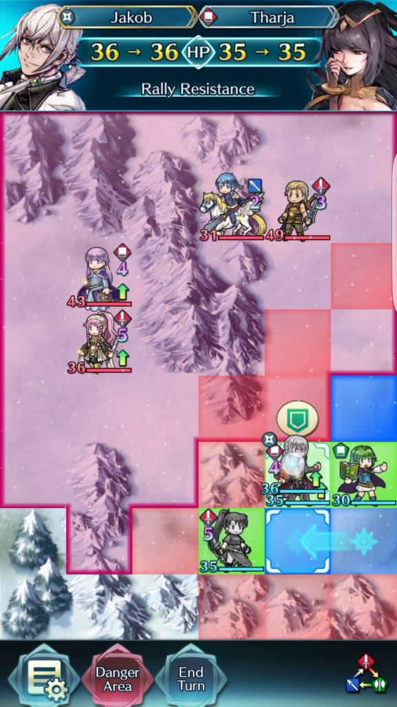 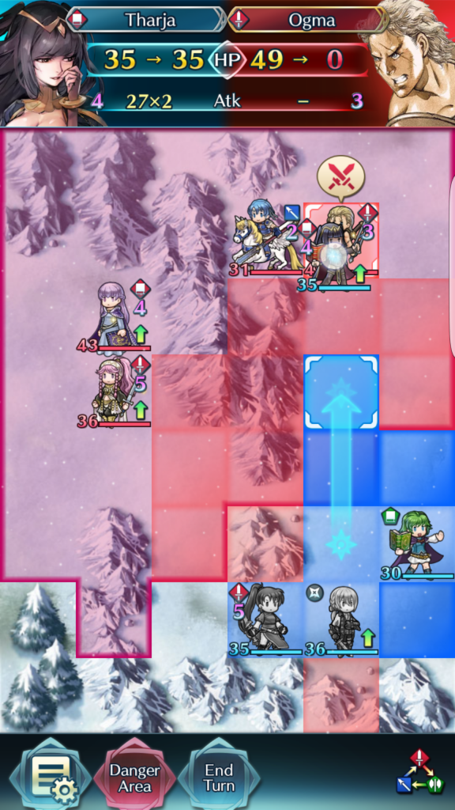
The extra 4 (8 over 2 attacks) damage is exactly what I need for a ORKO on Ogma.
And then to top it all off, I use draw back to prevent Tharja from getting destroyed.
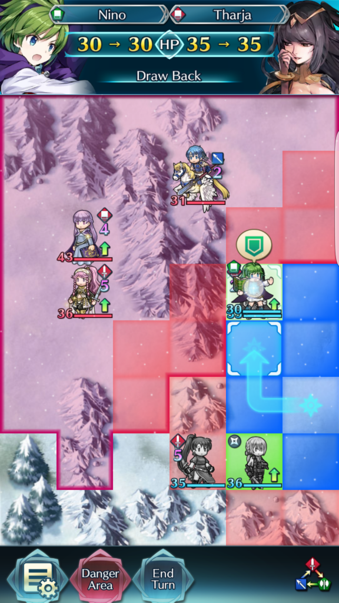
Always Keep in Mind Passive Abilities
When I first started playing Fire Emblem Heroes, I often overlooked passives, particularly the Spur X passives, because they have no animation and no visual cues. However, when used properly the Spur X passives can be incredibly useful. Always keep these in mind when positioning your characters. Pay attention to attack and movement order to maximize the use of these passives. For Spur Defense or Spur Resistance, try to use these passives when using a character to tank an attack.
Putting it All Together
Consider the below situation. Obviously I am winning, but I want to win with all 4 units alive, for maximum arena points.
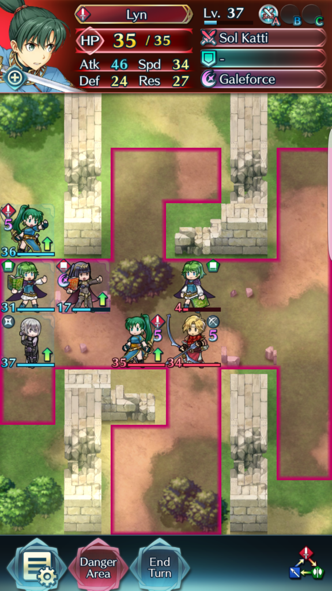
Here are some points to consider:
- Lyn can only attack if I use Nino’s draw back. Even doing so, she can only attack the enemy Lyn. This will not be a KO. So, I can’t really do much with Lyn.
- With Vengeance (special attack), Tharja can KO Jeorge (the archer). However, Tharja can only KO Lyn with 2x attacks, which Tharja cannot get unless I take advantage of Lyn’s Spur Speed.
- Nino can 2x attack and KOÂ the archer Jeorge, without any buffs, but does minimal damage to Lyn thanks to color disadvantage.
- Jakob can attack to reduce Def and Res by 7, but only does about 10 damage to the relevant targets (ie not Nino). If I attack Lyn, I still have to use Tharja to KO Lyn. Then Nino can only KO one of the two remaining enemies.
So what’s the best case scenario here? It looks like the solution would be:
- Use Nino to KO Jeorge
- Use Tharja with Lyn support to KO Lyn
- Use Jakob to KO Nino
Here’s how I play it out:
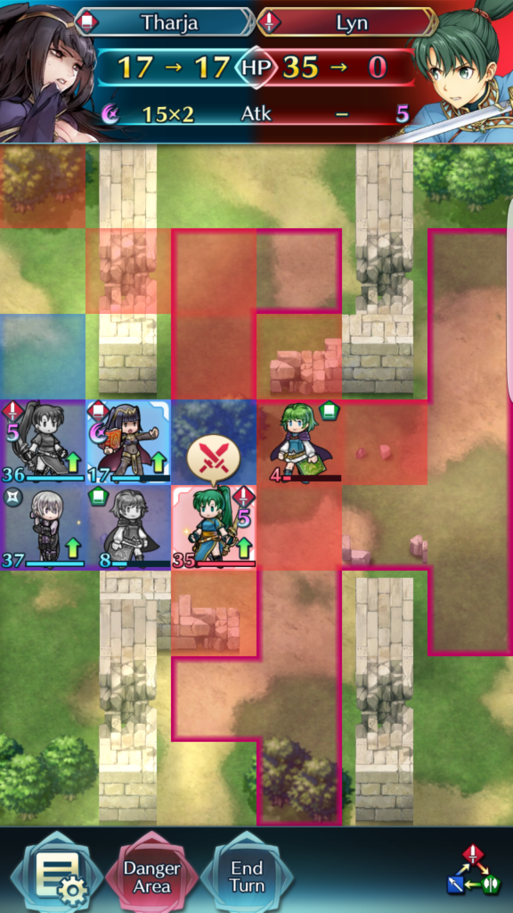
Tharja KO’s Lyn, thanks to speed buff from my Lyn

Jakob cleans up
So – even though this game feels pretty simple, there can be a surprising amount of thinking involved to play optimally!
A Final Note on AIÂ Manipulation
When faced with two heroes the AI can defeat, I noticed it often tends to go for the closest one first. So, if you have a case where you are in a 2v1 and one of your heroes is useless (for example, due to color disadvantage), I like to throw that one in front of the other ally in the hopes of absorbing attacks that would otherwise KO the more useful hero.
I also notice that when the AI approaches, if it is faced with two heroes out of its reach by the same range (ie two of your heroes are each 5 squares away), it will prefer to approach the hero that it has a color advantage against. You can use this knowledge to help predict AI movement patterns, and also structure the positioning of your colored units to get the AI to move where you want it to.
And of course, the AI always attacks when it can, even if it does 0 damage. My favourite way to take advantage of this is by placing my dagger user (or archer) within the attack range of only the enemy cleric, and watch the AI throw away its clerics.
There’s probably much more that can be done to take advantage of bad AI. This is just scratching the surface.
Feedback
Hopefully you gained some insights from this. I’d be interested in hearing any feedback, including any tactics you use.